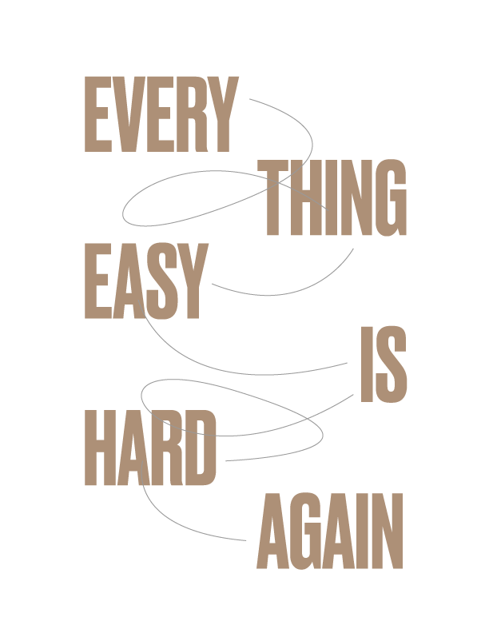

<!doctype html>
<html lang="en-us" dir="ltr">
<head>
  <meta charset="utf-8">
  <meta name="viewport" content="width=device-width, initial-scale=1, shrink-to-fit=no">
  <link rel="stylesheet" href="css/main.css">
  <title>img srcset width descriptor and sizes</title>
  <meta name="author" content="Justin Gagne">
</head>
<body>

<!-- A responisve image strategy for bitmap (JPG [photographic]) images -->

<!-- Without sizes attribute -->

<!--  -->

<!-- With sizes attribute -->


<!-- A responsive image strategy for Scalable Vector Graphic (SVG [illustration]) images with a fallback Portable Network Graphic (PNG [illustration]) for browsers that don't support SVG via the `img` tag  -->

<!-- <a href="https://frankchimero.com/writing/everything-easy-is-hard-again/"></a> -->

</body>
</html>
